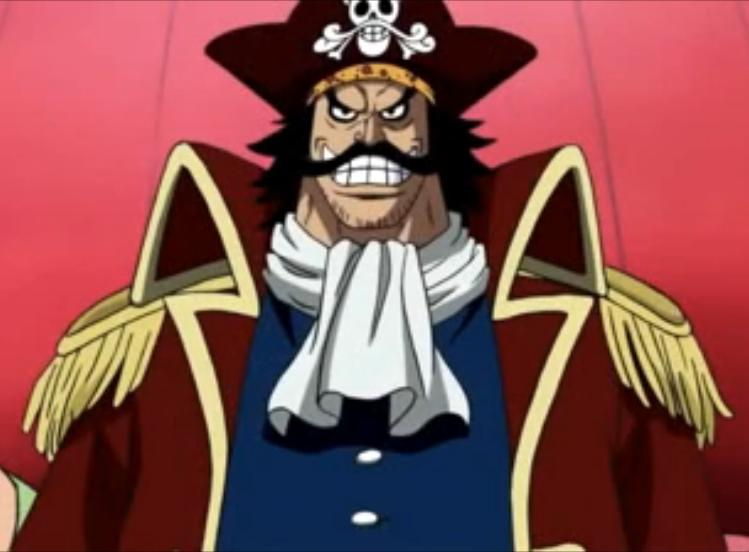
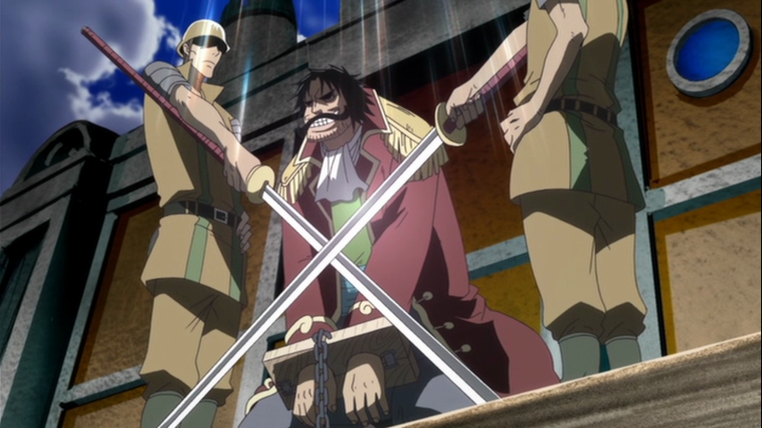
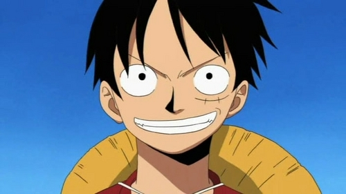

|  |
Everything started with a man namely Gol D. Roger. He is the strongest, toughest, and only person who sailed the entirety of Grand Line. He is well known to every humans of pirate ages bearing the tag name as the Pirate King. |
The capture and death of Roger by the World Government brought a change throughout the world. His last words before his death revealed the location of the greatest treasure in the world, One Piece. It was this revelation that brought about the Grand Age of Pirates, men who dreamed of finding One Piece (which promises an unlimited amount of riches and fame), and quite possibly the most coveted of titles for the person who found it, the title of the Pirate King. |
 |
|  |
Enter Monkey D. Luffy, a 17-year-old boy who defies the standard definition of a pirate. Rather than the popular persona of a wicked, hardened, toothless pirate who ransacks villages for fun, Luffyfs reason for being a pirate is one of pure wonder; the thought of an exciting adventure and meeting new and intriguing people, along with finding One Piece. Following in the footsteps of his childhood hero, Luffy and his crew travel across the Grand Line, experiencing crazy adventures, unveiling dark mysteries and battling strong enemies, all in order to reach One Piece. |